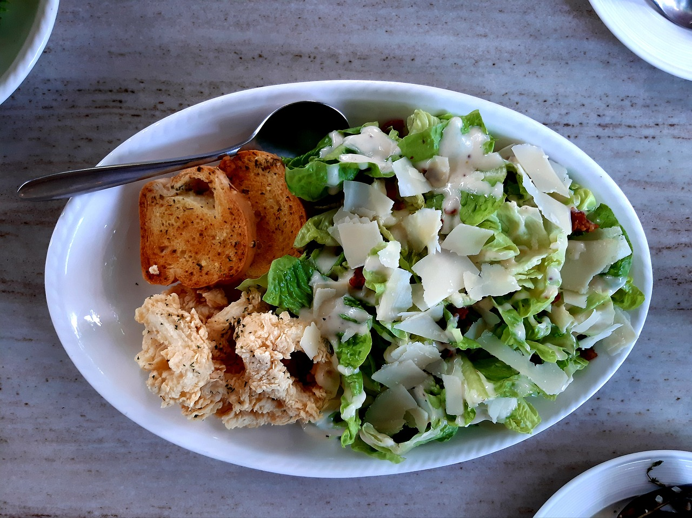
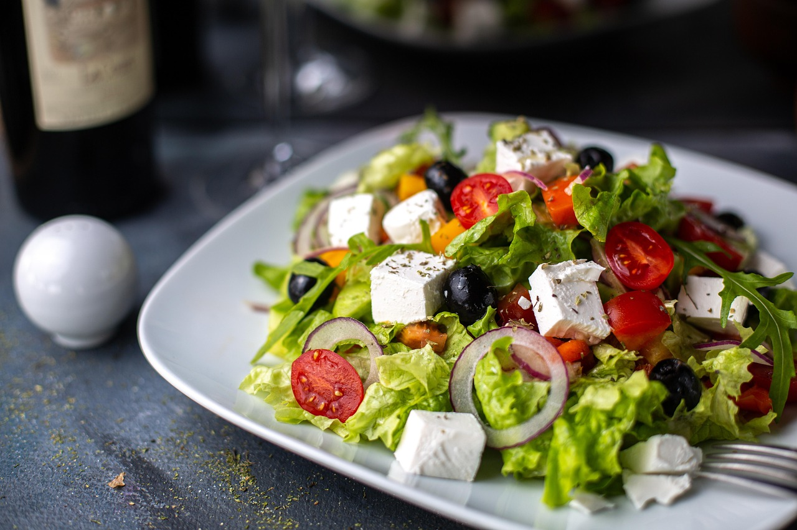

Salate sind weit mehr als nur Beilagen sie sind ein Fest der Frische, Vielfalt und Lebensfreude. Ob knackig-grün, bunt gemischt oder raffiniert kombiniert, bieten sie nicht nur eine wahre Geschmacksexplosion, sondern auch eine Fülle an wertvollen Nährstoffen, die Körper und Geist in Balance halten. In einer Welt, in der gesunde Ernährung zunehmend an Bedeutung gewinnt, eröffnen Salate spannende Möglichkeiten, Kreativität in der Küche auszuleben und sich gleichzeitig etwas Gutes zu tun. Lassen Sie sich inspirieren von saisonalen Zutaten, exotischen Dressings und innovativen Kombinationsideen, die jedem Salat das gewisse Etwas verleihen für ein Genusserlebnis, das so abwechslungsreich ist wie das Leben selbst.

Frischer Grüner Salat
Zutaten :
1 Bund Ruccola
100g Parmesan
10ml Dressing nach Wahl

Gemischter Salat
Zutaten:
1 Tomate
5 Broccolieköpfchen
1/2 Eisbergsalat

Griechischer Salat
Zutaten:
1 Packung Fetakäse
1 Bund bunter Salat
10 Oliven
1 Packung Kräuter de Provoncê